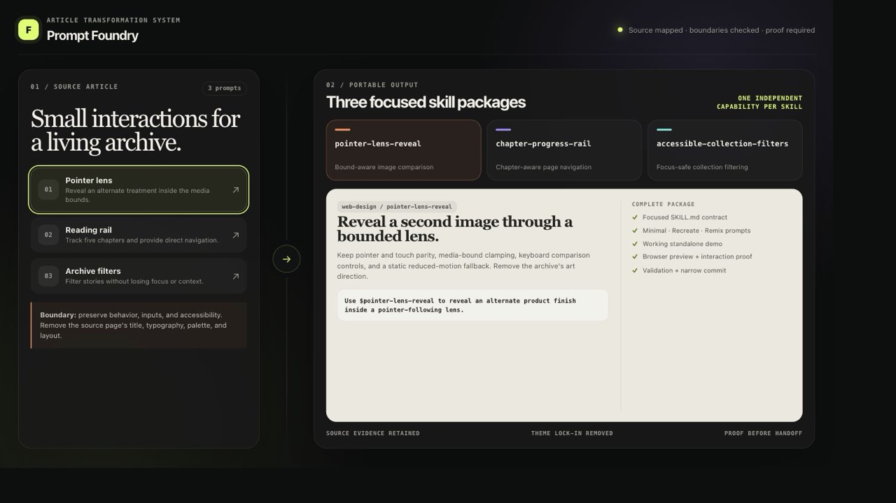

CodexLocal demo
Article Prompts To Skills
$article-prompts-to-skillsConvert an article, tutorial, or prompt pack into focused reusable AgentSkills, one independent capability per skill, with portable instructions, example prompts, working demos, preview screenshots, validation, gallery updates, and a narrow commit. Use when the user asks to turn an article's prompts, tutorial sections, design patterns, interactions, or workflow ideas into complete skills rather than leaving them as prose.